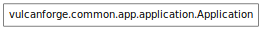

Applications (a.k.a. Tools)¶
Users are members of Projects which are containers for Applications, commonly referred to as Tools here for disambiguation, which can be containers for Artifacts.
Vulcan includes several already made tools (Wiki, Tracker, Downloads, Discussions, etc...) along with some functionally required tools (home, neighborhood_home)
A tool is defined in a subclass of vulcanforge.common.app.application.Application and registered with the ToolManager class’s default_tools dictionary. An installed tool for a Project is represented by an AppConfig instance.

- class vulcanforge.common.app.application.Application(project, app_config_object)[source]¶
Bases: object
The base VulcanForge pluggable application
Variables: - status – the status level of this app. ‘production’ apps are available to all projects
- searchable (bool) – toggle if the search box appears in the left menu
- permissions – a dictionary of named permissions used by the app, the values describe what the permissions enable
- sitemap – a list of SitemapEntries to create an app navigation.
- installable (bool) – toggle if the app can be installed in a project
- self.root (Controller) – the root Controller used for the app
- self.api_root (Controller) – a Controller used for API access at /rest/<neighborhood>/<project>/<app>/
- self.admin (Controller) – a Controller used in the admin interface
Apps may override this to provide additional admin menu items :return: a list of SitemapEntries
- get_markdown()[source]¶
App definitions can override this method to use a different markdown setup.
Returns: an instance of markdown ready to use for conversion Implemented to consolidate which markdown logic to the application instance for markdown preview mode. Not used consistently throughout codebase.
- iter_mapped_classes()[source]¶
Iterates yielding each mapped class owned by this application.
Used under the hood in purging all database objects from a specific app.
Apps should provide their entries to be added to the main nav :return: a list of SitemapEntries
- set_acl(acl_spec=None)[source]¶
Install default acl. Note that we cannot modify the config acl directly, because ming does not note the change.
Apps should override this to provide their menu :return: a list of SitemapEntries